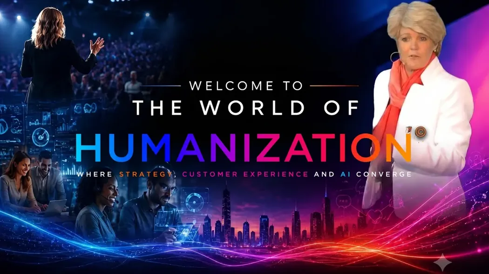

Human + AI: Leading People and Customers Through the AI ShiftWelcome to the World of Humanization
For leadership teams and organisations navigating what AI means for their people and their customers. Employee anxiety about AI is real, and pretending otherwise doesn't make it go away. This keynote replaces the fear with a plan: how to combine the empathy, judgement and warmth of your people with the speed and intelligence of AI to create experiences neither could deliver alone. Audiences leave understanding how to use AI to become more productive and more human at the same time — not less. Because in an age when anyone can buy the same technology, the organisations that win won't be the most automated. They'll be the most impossible to replace.
Best for: AI strategy days, leadership conferences, digital transformation events, executive offsites.
View the Keynote Enquire about this keynote